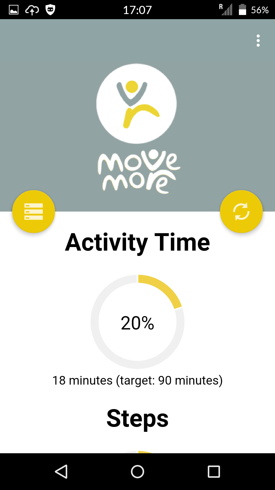

MoveMore app: Home
The project supports the tackling a huge global social problem - physical inactivity. This is one of
the most important contributors to poor health and wellbeing from cradle to grave. Being physically
active also supports creation of wealth for individuals, businesses and populations. But accurate
measurement of physical activity levels is difficult, and self-reported data is very unreliable and
hugely over estimates real levels, reducing motivation for behavioural change.
We have developed a smart phone app able to generate an objective measurement of activity, educate
people about their activity levels and achieve large-scale behavioural change. The app is composed
of a mobile app tracking the individual and a server side program performing data cleaning and
visualisation.
Our app is designed to support people in adopting a healthier lifestyle. It is designed to be fun
and to generate a sense of city cohesion. It is also distributed for free. The app tracks the
activity of a person (still, walking, running, cycling, etc.), the associated timing (e.g. you
walked for 20 minutes starting from 12:23 on 20.12.2015) and location. The app enables users to
monitor their personal lifestyle, including through the provision of directed and customised
messages.
Aggregated and anonymysed data will be used for studies both in terms of social health and mobility
as well as in terms of advancing the field of computer science/wellbeing. The location associated to
the activity will also enable to understand how different parts of the city (and hence social
strata) react to health messages via MoveMore or other sources (e.g. government or city council).
Similarly it will enable understanding mobility patterns over time (how people move and in what
ways) and hence to evaluate the impact of mobility measures (e.g. a change in parking regulations)
in terms of impact on the health of the population.
Differently from other apps (e.g. Strava), MoveMore is not an exercise tracker that you set up before exercising. MoveMore follows you during your normal everyday activity and monitors the amount of time you are physically active. It then provide support to move more during your day.
The activity is carried out in collaboration with Sheffield’s Move More initiative http://www.movemoresheffield.com/
Differently from other apps (e.g. Strava), MoveMore is not an exercise tracker that you set up before exercising. MoveMore follows you during your normal everyday activity and monitors the amount of time you are physically active. It then provide support to move more during your day.
The activity is carried out in collaboration with Sheffield’s Move More initiative http://www.movemoresheffield.com/
How it works
- Download the app from the store (while in Beta testing you will have received a link via email).
- Install it on your phone (Android or iOS)
- Start Moving More
- Regularly check your progress against your targets (initially you will be set some general tasks). Please note that you must always adapt any target to your own physical condition. Never overexercise!
The Interface
There are four panels in the interface. Press the two yellow floating buttons to move among them. please note that the floating buttons function changes depending on the context. Appropriate icons will identify these functions

The main interface presents the summary achieved today with respect to your tagets in terms of active time and in terms of steps (if your phone supports step counting).
There are four main activity indicators; scroll down to see them all. As soon as you scroll down, the app will reduce the size of the logo to leave more space to the graphs.
By pressing the left button it is possible to access the timeline of activities for the day.
Pressing the right floating button will give you access to the month activity view:

Pressing a day's row, will take you to the activity timeline for the day.
Back to the timeline, by pressing the grey icon close to each action you can access the geographic area where the action took place.
Back to the timeline, by pressing the grey icon close to each action you can access the geographic area where the action took place.
How to position the phone
Our phone is used every day for different activities: texting, writing emails, surfing the web and - yes - calling. Every time the phone is in your hands it can be confused and may not recognise the activity. So please make sure to keep the phone in a stable place when possible.
Best places are trousers pockets and sports armbands.
What to expect
The app is currently in Beta version, this means that it is being tested with your help. It means that occasionally there may be some glitches. We would like to hear from you if you experience any.
This may depend on the app itself or from particular characteristic of your phone we are unaware of and we are keen on investigating.
Known issues
The app uses a number of sensors to recognise your physical activities. Some phones (e.g. some instances of the Galaxy S4) happen to turn off the accelerometer when you switch off the screen. If that happens your steps recorded by the phone will be meaningless (typically you will see some dozens of steps in a day as opposed to the thousands you will likely take). The activity recognition should not be affected. Please let us know if the step counter issue happens to you and in case what phone make you have.
The app is designed to minimise battery use. Please let us know if you feel that there is an excessive use of power!.